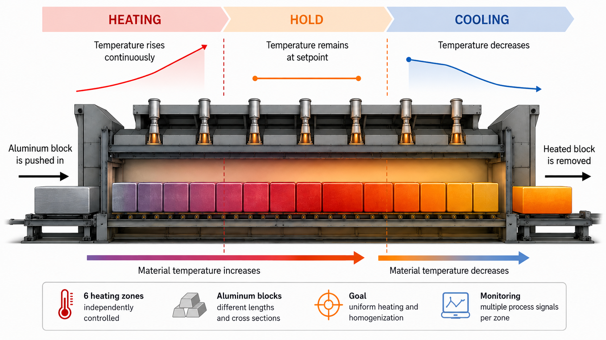
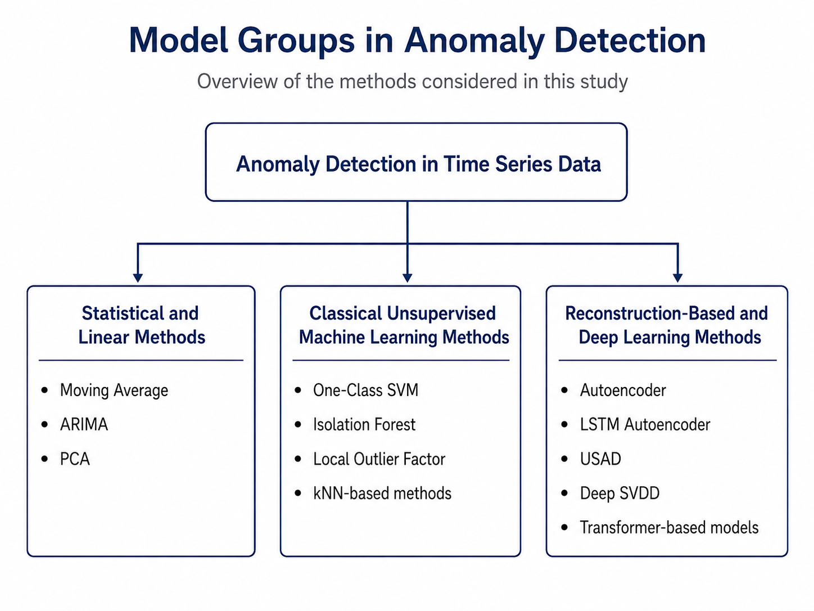
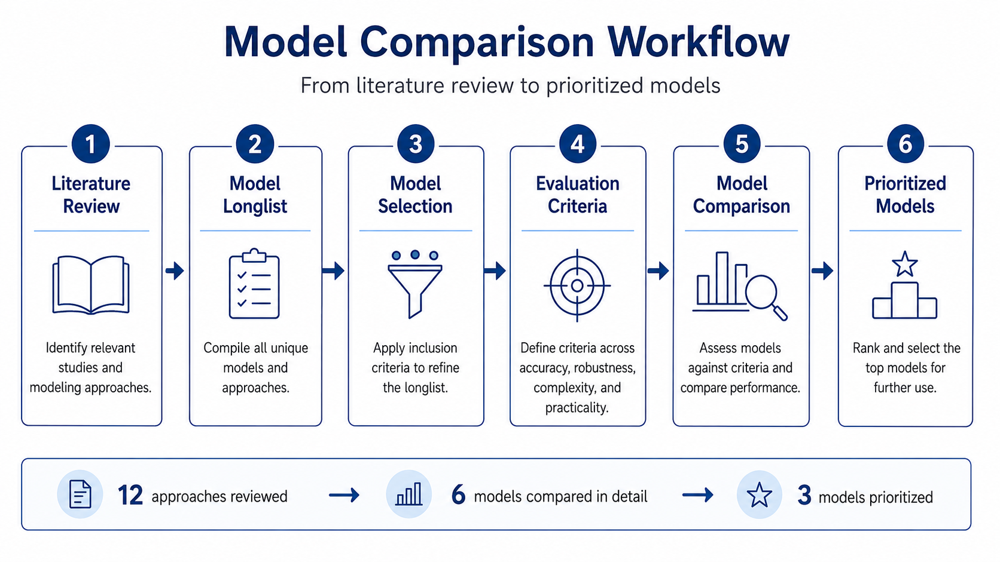
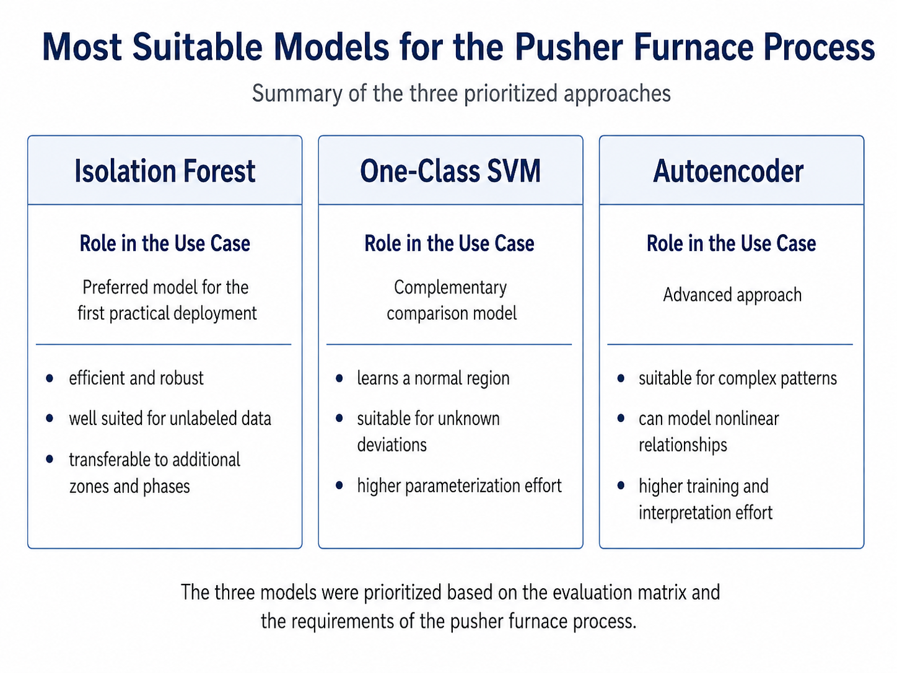

Model 01
Isolation Forest
ROLE
Preferred model for a first practical implementation.
STRENGTHS
Efficient, suitable for unlabeled data and transferable to different furnace zones and process phases.
Research on suitable machine learning methods for detecting anomalies in multivariate industrial time-series data from an industrial pusher furnace.

Industrial pusher furnaces generate large amounts of process data from temperature, gas and air control systems. Detecting abnormal process behavior manually is difficult because of the amount and complexity of the available time-series data.
Only a limited number of clearly labelled anomalies are available. Therefore, the research focused on machine learning approaches that can learn normal process behaviour and detect previously unknown deviations.
A structured evaluation process was used to review 12 potential approaches, select six models for detailed comparison and prioritize three models for subsequent practical testing.

The six selected models were assessed against industrial requirements. The matrix below maps each criterion against the candidate models.
| CRITERION | MA | PCA | OCSVM | IF | LOF | AE |
|---|---|---|---|---|---|---|
| Performance | + | + | 0 | + | 0 | 0 |
| Accuracy & false alarms | 0 | 0 | + | + | 0 | + |
| Rare & unknown anomalies | 0 | 0 | + | + | + | + |
| Unlabeled data | + | + | + | + | + | + |
| Robustness | 0 | 0 | 0 | + | 0 | 0 |
| Stability | 0 | 0 | 0 | + | 0 | 0 |
| Interpretability | + | 0 | 0 | 0 | 0 | − |
| Multivariate data | − | + | + | + | 0 | + |
| Parameterization effort | + | 0 | − | 0 | 0 | − |
| Scalability / extensibility | 0 | + | 0 | + | 0 | + |

Preferred model for a first practical implementation.
Efficient, suitable for unlabeled data and transferable to different furnace zones and process phases.
Complementary comparison model.
Learns a representation of normal process behaviour and can identify previously unknown deviations.
Advanced approach for more complex process patterns.
Can model nonlinear relationships between multiple process variables.
This research represents the theoretical and methodological foundation for subsequent practical model tests on real industrial process data.
